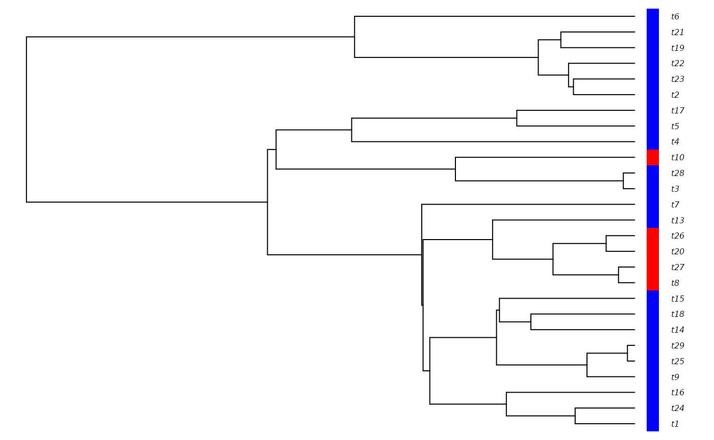

Simulating with secsse
Thijs Janzen
2023-07-06
Source:vignettes/sim_with_secsse.Rmd
sim_with_secsse.RmdA good test of the fit of your secsse model, is to verify found parameter estimates using simulations. In other words: we want to know if the recovered model will also be recovered when the true model is really the focal model. If it is not, then although you found the best fitting model, this model does not explain the data well. Alternatively, you might want to create some artificial data to test your pipeline on. In either case, simulating a tree under the secsse model can come in very handy!
Prep work
Tree simulation in secsse takes a very similar form to performing a Maximum Likelihood analysis, e.g. again we need to formulate our Lambda List, Mu vector and Q matrix, and this time we also need to populate these with actual values.
Creating parameter structure
For a more detailed description of how the Lambda List, Mu vector and
Q matrix work, we refer to the vignette
vignette("starting_secsse", package = "secsse"). We will
here first simulate using the CR model:
spec_matrix <- c(0, 0, 0, 1)
spec_matrix <- rbind(spec_matrix, c(1, 1, 1, 1))
lambda_list <- secsse::create_lambda_list(state_names = c(0, 1),
num_concealed_states = 2,
transition_matrix = spec_matrix,
model = "CR")
mu_vector <- secsse::create_mu_vector(state_names = c(0, 1),
num_concealed_states = 2,
model = "CR",
lambda_list = lambda_list)
shift_matrix <- c(0, 1, 3)
shift_matrix <- rbind(shift_matrix, c(1, 0, 4))
q_matrix <- secsse::create_q_matrix(state_names = c(0, 1),
num_concealed_states = 2,
shift_matrix = shift_matrix,
diff.conceal = FALSE)In order for secsse to be able to use these to simulate a tree, we
need to provide actual starting parameters. secsse has a helping
function (fil_in()) for that as well!
speciation_rate <- 0.5
extinction_rate <- 0.05
q_ab <- 0.1
q_ba <- 0.1
used_params <- c(speciation_rate, extinction_rate, q_ab, q_ba)
sim_lambda_list <- secsse::fill_in(lambda_list, used_params)
sim_mu_vector <- secsse::fill_in(mu_vector, used_params)
sim_q_matrix <- secsse::fill_in(q_matrix, used_params)The function fill_in() will go over the different
objects and fill in the appropriate parameter value from the
used_params vector, e.g. when it finds a 1 as
rate indicator, it enters the value at position
used_params[1], when it encounters a 2 as rate
indicator, it enters the value at position used_params[2]
etc.
Simulating
sim_tree <- secsse::secsse_sim(lambdas = sim_lambda_list,
mus = sim_mu_vector,
qs = sim_q_matrix,
crown_age = 5,
num_concealed_states = 2,
seed = 5)
if (requireNamespace("diversitree")) {
traits_for_plot <- data.frame(trait = as.numeric(sim_tree$obs_traits),
row.names = sim_tree$phy$tip.label)
diversitree::trait.plot(tree = sim_tree$phy,
dat = traits_for_plot,
cols = list("trait" = c("blue", "red")),
type = "p")
} else {
plot(sim_tree$phy)
}## Loading required namespace: diversitree
Conditioning
Notice that secsse_sim() can simulate a tree
conditioning on different tip-states: either it uses the conditioning
obs_states, in which case secsse will keep simulating until
it simulates a tree that has all observed states. This is usually
advised, as typically the observed states are the starting point of the
analysis, and not having observed all of them seems unrealistic.
Alternatively, secsse can also condition on true_states -
in this case secsse will try to simulate until all possible combinations
of observed and concealed states are present at the tips:
sim_tree <- secsse::secsse_sim(lambdas = sim_lambda_list,
mus = sim_mu_vector,
qs = sim_q_matrix,
crown_age = 5,
num_concealed_states = 2,
conditioning = "obs_states",
seed = 6)
sim_tree$obs_traits## [1] "1" "1" "1" "1" "1" "1" "1" "1" "1" "1" "1" "1" "1" "0" "0" "1" "1" "1" "1"
## [20] "1" "1" "1"
sim_tree$true_traits## [1] "1B" "1B" "1A" "1B" "1B" "1B" "1B" "1B" "1B" "1B" "1B" "1A" "1A" "0B" "0B"
## [16] "1B" "1A" "1A" "1A" "1A" "1A" "1B"
sim_tree <- secsse::secsse_sim(lambdas = sim_lambda_list,
mus = sim_mu_vector,
qs = sim_q_matrix,
crown_age = 5,
num_concealed_states = 2,
conditioning = "true_states",
seed = 6)
sim_tree$obs_traits## [1] "0" "1" "1" "1" "0" "0" "0" "0" "0" "0" "0" "0" "0" "0"
sim_tree$true_traits## [1] "0A" "1B" "1A" "1A" "0A" "0A" "0A" "0A" "0A" "0A" "0A" "0B" "0B" "0B"Here, we have only explored a two-state system and the differences may not be very large, but for large numbers of states, such conditioning might yield very different trees.